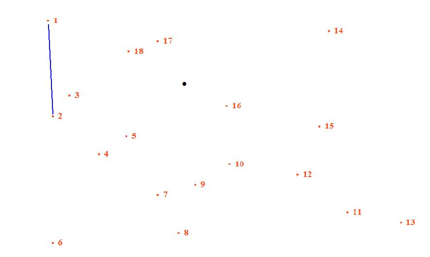

For getting perfect result from exercise 2 please be careful about
these issues.
Click on the number or word not on the point . As if it
written .1 and .2 and you want to join them
with line you must click on 1 and 2 instead of .
as they are just for connection.
Your system resolution must be 1280X1024 with operating system
Windows .It is better if you have windows XP.
After finishing all connection user must click OK button for
knowing result.
Steps
to Follow

Some dots on the screen are
associated with
numbers or letters. Link them in ascending order, by clicking once on
the number
or letter.
The system automatically draws a line
between two consequently
selected numbers or letters.
If you find both numbers and letters
in the same
screen, alternate a number and a letter always in ascending order: the
first
number must be linked with the first letter of alphabet; the first
letter with
the second number; the second number with the second letter and so on
until the
end.
To undo the last selection, click on
the “undo” button.
Only at the end of
the path, click on the “ok” button.
If the exercise is correctly
performed a
picture will be finally visible.